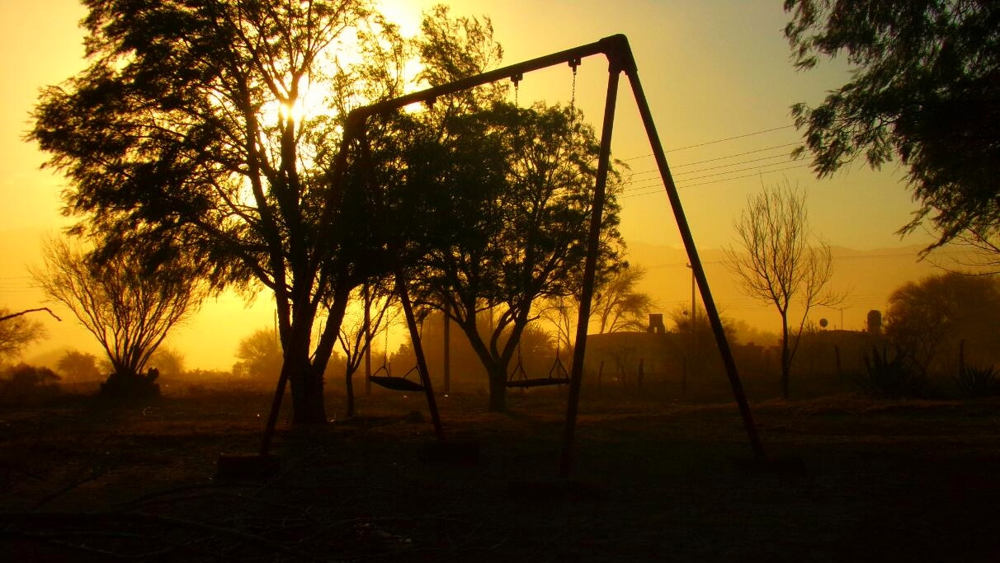

Efecto Foehn: el viento que baja de la cordillera caliente y seco
En Mendoza y en San Juan hay días de invierno en que, de pronto, la temperatura sube, el aire se vuelve tan seco que la piel tira y un viento cargado de polvo baja de la cordillera. Es el Zonda. No es un viento cualquiera: llega caliente y seco aunque viene de montañas cubiertas de nieve. La explicación es una de las aplicaciones más lindas de la termodinámica de la atmósfera.
Federico Norte, que lo estudia desde hace décadas, lo define así: el Zonda es un viento fuerte, cálido y muy seco, asociado a la compresión adiabática del aire al bajar por las laderas orientales de los Andes, en el centro oeste de la Argentina [1]. Es más frecuente en invierno y en primavera [1]. Pertenece a la familia de los vientos que en los Alpes se llaman foehn, nombre que pasó a designar a todos los vientos que bajan calientes y secos de una montaña [1]. Según la región recibe otros nombres, como chinook [1].
El escenario es imponente. A la latitud de Cuyo, los Andes forman una barrera al flujo del oeste con una altura media de 4500 metros, y un máximo de 6959 metros en el Aconcagua [1]. Del lado del Pacífico llega aire frío y húmedo; del lado argentino, ese mismo aire baja convertido en otra cosa.
El modelo de manual es el mismo que el de los Alpes [1]. El aire del Pacífico es empujado contra los Andes y sube. Primero se enfría al ritmo del gradiente adiabático seco, hasta que se satura; desde ahí sigue subiendo al ritmo del gradiente húmedo, se forman nubes y cae lluvia o nieve del lado chileno [1]. Del lado argentino, el aire baja y se calienta al ritmo del gradiente seco, y por eso llega seco y caliente [1].
La clave está en la asimetría. Al subir sin condensar, el aire se enfría 9,8 °C por kilómetro; ya saturado, solo unos 6 °C por kilómetro [3], porque la condensación del vapor libera calor, como se explica en La Estabilidad Atmosférica. Al bajar, sin nubes, se calienta a 9,8 °C por kilómetro todo el trayecto. Un ejemplo con valores elegidos: aire a 15 °C a 1000 metros del lado chileno, que se satura a 2000 metros y cruza la cordillera a 4500, llega a 4500 metros a unos −10 °C y baja hasta los 700 metros de Mendoza a unos 27 °C (un cálculo propio con esos gradientes). Llegó 12 °C más caliente de lo que estaba, y sin el agua que dejó del otro lado.
El calor no sale de la nada: es el que liberó el vapor al condensarse, y se queda en el aire mientras el agua cae como lluvia o nieve en Chile (un razonamiento propio). Es la misma física que hace crecer a las nubes de tormenta. Los especialistas discuten cuánto pesa este mecanismo frente a otro: en el foehn, el calentamiento también puede deberse a que baja aire que venía de más arriba, ya con mucha energía térmica, sin necesidad de lluvia del otro lado [2].
Un inflador de bicicleta: si tapás la salida de un inflador y empujás, el aire de adentro se comprime y el inflador se calienta. El aire que baja de la cordillera hace lo mismo: a medida que desciende, la presión de la atmósfera lo comprime y lo calienta, sin que nadie le dé calor.
El esquema de subir y bajar se conoce como la teoría de la «cascada», y no es la única explicación: otra es la del «salto hidráulico», [1], parecido al que se ve cuando el chorro de una canilla se abre de golpe en la pileta (una comparación propia). Para decidir qué pasa en cada caso, los meteorólogos miran el número de Froude, que compara la energía del viento con la que necesita para trepar la montaña [1]:
Un Froude alto indica que el flujo tiene energía suficiente para atravesar la barrera; uno bajo, que queda bloqueado [1]. Las simulaciones de un Zonda fuerte muestran una intensa actividad de ondas de gravedad con estructura de salto hidráulico [1]. La frecuencia de Brunt-Väisälä que aparece en la fórmula es la de una porción de aire que oscila en una atmósfera estable.
En Mendoza y en San Juan, el Zonda es más frecuente entre mayo y noviembre, con un máximo en primavera: octubre en Mendoza y septiembre en San Juan [1]. Suele llegar al suelo después del mediodía, hacia las 14 o 15 de Mendoza, y dos o tres horas antes en San Juan [1]. En Mendoza los episodios son cortos, con un máximo de una hora y otro de cinco; en San Juan duran más, con máximos de ocho y doce horas [1]. Sopla sobre todo del oeste o del noroeste [1].
Los episodios más fuertes tienen su propia estadística. Federico Otero, Diego Araneo y Maximiliano Viale, del IANIGLA, identificaron 324 eventos de Zonda entre 1981 y 2023 en tres estaciones de Mendoza y San Juan, y separaron los severos: los más largos y con más viento [2]. El 64,8 % de los severos ocurrió entre agosto y octubre [2]. Además empiezan antes y terminan más tarde que los otros [2].
Detrás de cada Zonda hay una situación del tiempo reconocible. En el caso clásico que describe Norte, un frente frío está junto a los Andes, asociado a una depresión frente a la costa chilena [1]. En los eventos severos, una vaguada muy profunda en altura queda sobre el Pacífico, y la dinámica se parece a la de la entrada de un frente frío intenso en Sudamérica [2]. Ese frente refuerza la lluvia del lado chileno, porque el aire sube con más fuerza contra la cordillera [2]. Del lado argentino, en cambio, no llueve: en Mendoza y en San Juan no hay Zonda si llueve o nieva [1].
Un salto de 10 grados: en un episodio moderado registrado en el aeropuerto de Mendoza el 27 de mayo de 2012, el Zonda llegó con un aumento brusco de 10 grados en la temperatura, una caída repentina del punto de rocío y un aumento del viento [1]. La temperatura y el punto de rocío son justamente las variables que usan los métodos que identifican el Zonda en los registros [1, 2].
Muchas veces el Zonda no llega a la ciudad. Al bajar se encuentra con aire más frío y quieto, y la ciudad de Mendoza está en una depresión del terreno: el viento queda unos 500 a 1000 metros por encima [1]. Ahí la gente dice que «está zondeando» [1]. Norte llama a eso Zonda de altura: el que sopla en la montaña sin bajar al llano. Solo el 5,7 % de esos días el viento llega al aeropuerto de Mendoza [1]. Mientras tanto, la inversión térmica no se rompe, y son frecuentes el smog y la neblina [1]. Si el viento se intensifica, o si el sol calienta el suelo, la capa fría desaparece y el Zonda baja [1].
Según la intensidad de las ráfagas, el Zonda vuela techos, derriba árboles y cables de alta tensión, corta la luz y las comunicaciones, y favorece el inicio y la propagación de incendios [1]. Cuando sopla en agosto o septiembre, al final del invierno, el viento y la sequedad dañan los cultivos, y el calor puede adelantar la floración de los frutales [1]. En la montaña acelera el derretimiento de la nieve y contribuye a los aludes [1]. Levanta polvo y hojas que reducen la visibilidad [1], y hace peligrosos los aterrizajes: en 2012, un avión que viajaba a un congreso de meteorología en Mendoza tuvo que volver a Santiago de Chile porque una ráfaga le impidió aterrizar [1].

También se le atribuyen efectos sobre el ánimo, como irritabilidad o depresión, igual que a otros vientos de este tipo [1]. Pero el propio Norte advierte que no hay análisis estadísticos que establezcan una relación de causa y efecto [1].
Pronosticarlo: anticipar un Zonda exige saber si el aire va a cruzar la cordillera, si va a romper la capa fría del llano y a qué hora. Por eso se usan métodos estadísticos y modelos numéricos de alta resolución, y saber cuándo empieza, dónde sopla, cuánto dura y qué ráfagas trae sigue siendo un desafío [1].
El Zonda es aire del Pacífico que deja su humedad en Chile y baja por el lado argentino calentándose por compresión. Llega cuando un frente frío se acerca a la cordillera, sopla sobre todo en invierno y primavera, y a veces se queda arriba, sin poder bajar a la ciudad. Es termodinámica de manual a escala de los Andes, y una parte central del clima de Cuyo.
Pregunta para la comunidad: Con los gradientes de 9,8 y 6 °C por kilómetro, ¿cuánto más caliente llegaría el aire a Mendoza si se saturara apenas empieza a subir? ¿Y si no se saturara nunca? ¿Qué te dice eso sobre el papel de la lluvia en Chile?